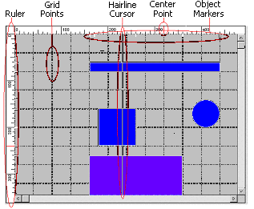
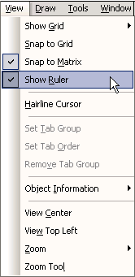
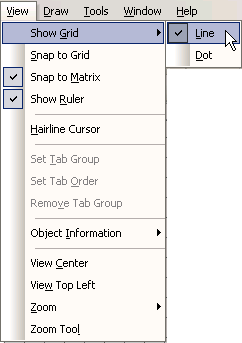
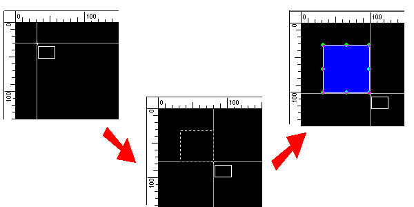
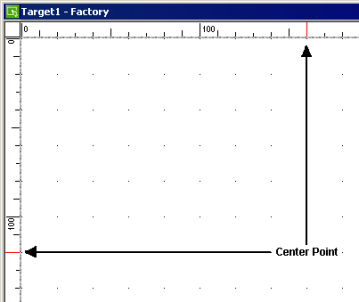
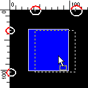

|
|
|
|
|
|
|
|

The ruler shows you the exact position, both horizontally and vertically, of objects on the panel.
From the View menu or panel right-click menu, select Show Ruler.

The grid consists of dots or lines that are spaced equally across the panel. Use grids as reference points for drawing and laying out objects.
From the View menu, point to Show Grid, then select either Line or Dot.

The hairline cursor is a guide that helps you draw your object.
To display the hairline cursor, from the View menu select Hairline Cursor.

Center point uses the ruler to mark the center of the panel.
To show the center point, from the View menu select Show Ruler. The red scales show the center point.

Object markers are guides that appears when you move an object.
If Show Ruler is selected, the object markers appear every time you move an object. If you move a group of objects, object markers appear for the outer most objects.
